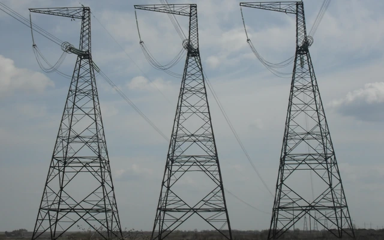
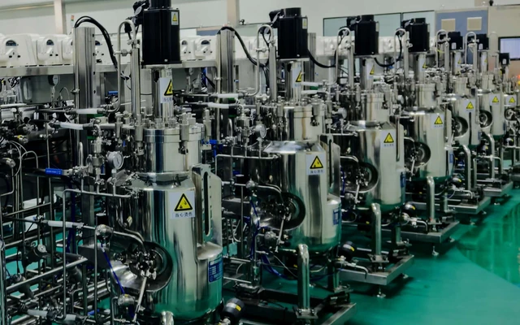
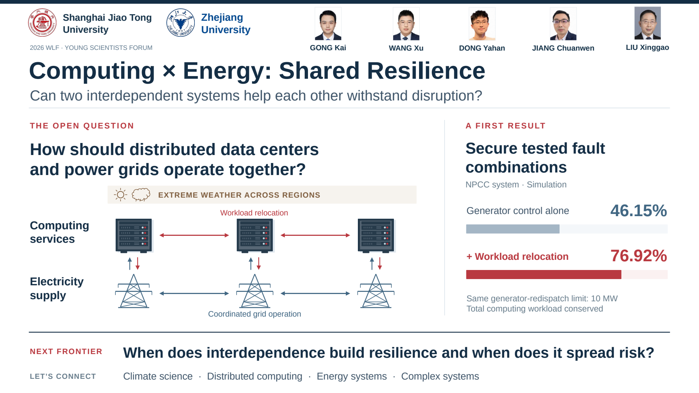
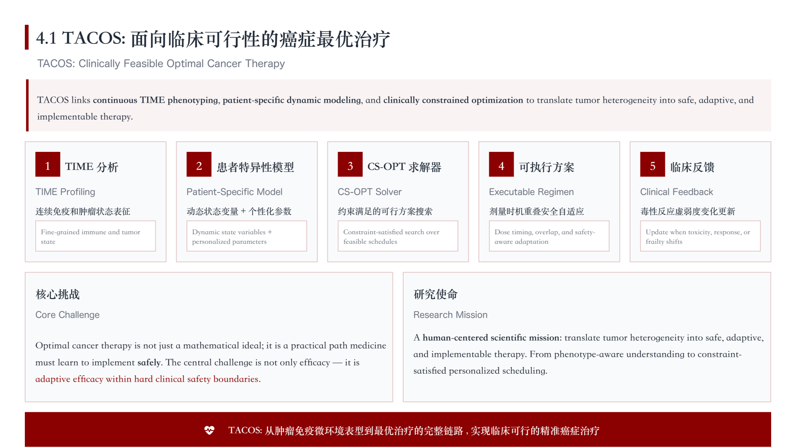
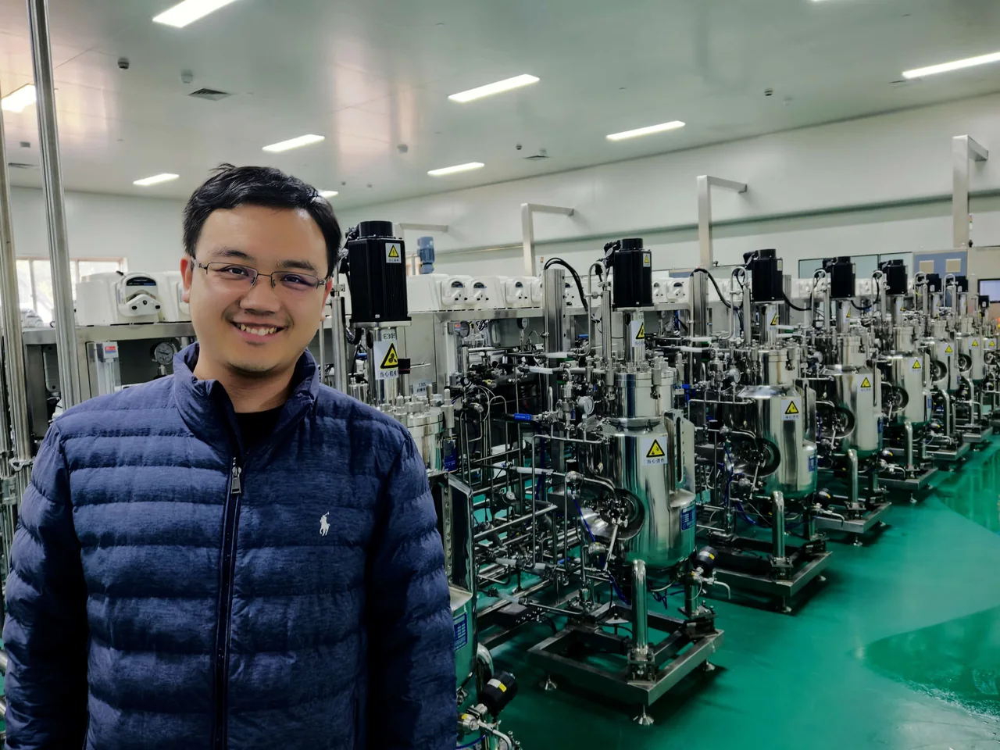

电力系统
极端天气同时改变风光出力和用电需求时，时序大模型能否提前识别供需缺口？我想把预测的不确定性带入调度模型，研究在电网安全约束下，什么时候调用储能、什么时候迁移可延迟的数据中心计算任务。
我现为浙江大学控制科学与工程学院博士后。博士期间，我在上海交通大学研究电力系统遭遇扰动时如何调整运行。目前，我把动态系统建模与优化控制用于电网调度、工业发酵和肿瘤治疗时序研究。
我负责或参与的十余项科研项目总经费超过人民币 1,000 万元，包括国家重点研发计划相关项目，以及人工智能重大项目、重点项目、一般项目各一项。2025 年，我参与的合作案例《应用智能技术实现生物制造过程精准控制》由宜昌东阳光生化制药有限公司申报，入选工信部首批人工智能在生物制造领域典型应用案例，全国共 16 项。 工信部名单（第 13 项）
我在 SCI 和 EI 期刊发表论文 15 篇，其中 1 篇于 2026 年入选 ESI 高被引论文，2 篇获 IEEE 国际会议最佳论文奖。作为发明人，我有 10 项已授权发明专利，另有 14 项发明专利申请已公开。 获奖与荣誉
我想研究一个问题：在历史数据上训练的 AI 大模型，到了新的运行环境，还能为决策提供哪些可靠信息？我的思路是用大模型估计系统状态和可能的变化，再用优化控制比较不同决策，并把电网、生产过程或临床研究中的约束明确写进模型。

极端天气同时改变风光出力和用电需求时，时序大模型能否提前识别供需缺口？我想把预测的不确定性带入调度模型，研究在电网安全约束下，什么时候调用储能、什么时候迁移可延迟的数据中心计算任务。

在东阳光的发酵产线上，即使操作条件相近，不同批次的关键指标也可能逐渐分化。我关注跨批次训练的模型能否从早期记录中识别这种变化，以及依据预测选出的控制策略，在后续独立批次中是否依然有效。

我与浙江省肿瘤医院的合作者关注肺癌治疗期间肿瘤免疫微环境的变化。一个想研究的问题是，多模态大模型能否区分同一患者随时间发生的变化和患者之间的差异？在此基础上，我希望用动力学模拟比较给药剂量和间隔受限时，化疗与免疫治疗的不同安排。
IEEE International Conference on Bioinformatics and Biomedicine (BIBM) · 已录用 · 通讯作者
International Power and Electrical Engineering Conference (IPEE)
IEEE Transactions on Sustainable Energy
现货市场环境下基于深度强化学习的光储联合电站储能系统最优运行方法
电网技术，46(9)，3365–3375
EI Compendex 收录 · 中国电机工程学会《能源电力领域高质量科技期刊分级目录（2022 年版）》T1 级
基于代理模型进化算法的用户侧灵活爬坡产品交易策略
电力系统自动化，46(16)，132–141
EI Compendex 收录 · 中国电机工程学会《能源电力领域高质量科技期刊分级目录（2022 年版）》T1 级
IEEE Transactions on Industry Applications
International Conference on Power and Renewable Energy Engineering (PREE)
IET Generation, Transmission & Distribution · 通讯作者

世界顶尖科学家论坛·青年科学家大会
电网发生故障时，数据中心能提供怎样的支持？在仿真中，保持发电机调节上限不变，跨站点迁移计算任务让电网能够应对更多种故障组合。


BIOTEC-CHINA 2026
浙江大学刘兴高教授课题组介绍了工业发酵过程预测和肿瘤治疗方案数学建模方面的研究。


东阳光生化
我协调课题组的研究与学生开发工作，利用红霉素产线的实际数据预测关键指标，研究不同发酵批次之间的变化。

赛力斯集团
我牵头对接课题组与新能源汽车企业赛力斯集团，开展科研合作交流。
第 6 专题研讨会“可再生能源系统与电力系统的运行和控制”联合主席
第 17 专题分会主席，人工智能驱动的复杂系统优化控制与状态估计
第七专题主席，交直流混合电网中的算力与电力协同优化
第 9 专题研讨会“可再生能源系统与电力系统的运行和控制”联合主席
分会主席（2024），专题研讨会联合主席（2025、2026）
专题研讨会主席（2025）、联合主席（2026），两届技术程序委员会委员
控制科学与工程学院，合作导师为刘兴高教授。
导师为蒋传文教授，研究源网荷协同下的电力系统灵活性。
电气学院卓越计划班。